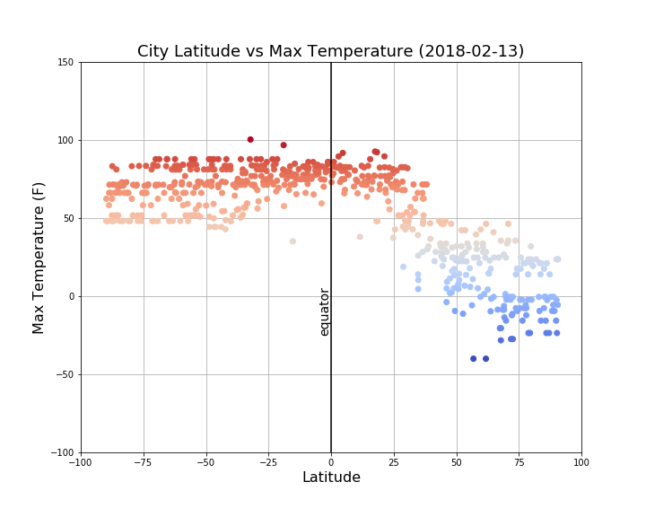

 The purpose of this project was to analyze how weather changes as you get closer to the equator. To accomplish this analysis I pulled data from the OpenWeatherMap API to assemble a dataset on over 500 cities. After assembling the dataset, we used Matplotlib to plot various aspects of the weather vs the latitude geolocation. Factors we looked at included: temperature, cloudiness, wind speed, and humidity. This site provides the source data and visualizations created as part of the analysis, as well as explanations and descriptions of any trends and correlations witnessed.
For this project I randomly selected 500 < x < 700 cities from around the world using the following python code to produce latitude and longitude geolocations:
>>> import numpy as np
>>> lat_coord = np.random.uniform(-90,91,700)
>>> lng_coord = np.random.uniform(-180,181,700)
>>> import pandas as pd
>>> from citipy import citipy
>>> weather_df = pd.DataFrame()
>>> weather_df['city_name'] = ''
>>> weather_df['country_code'] = ''
>>> for i in bar(range(len(lat_coord))):
... weather_df.set_value(i,'city_name',citipy.nearest_city(lat_coord[i], lng_coord[i]).city_name)
... weather_df.set_value(i,'country_code',citipy.nearest_city(lat_coord[i], lng_coord[i]).country_code)